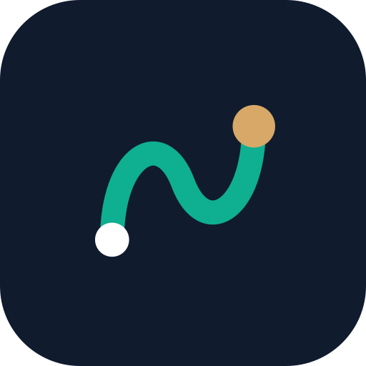
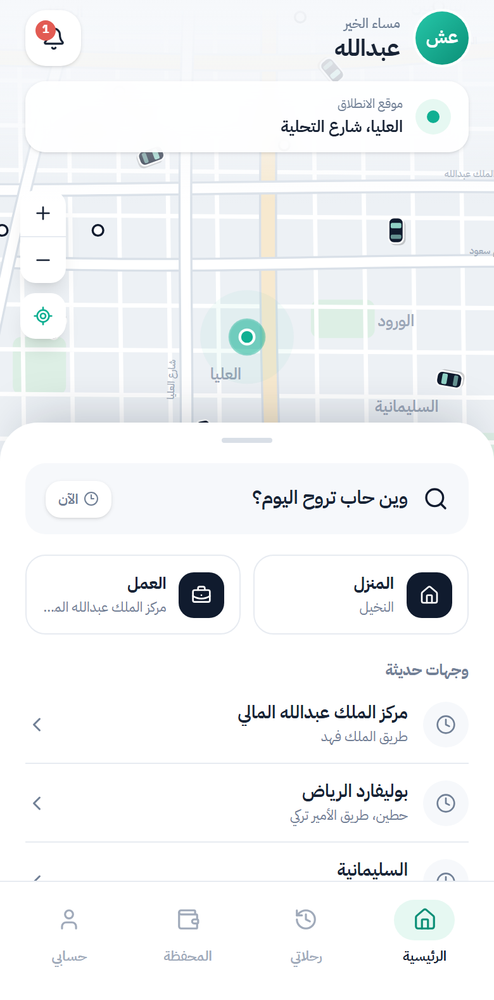
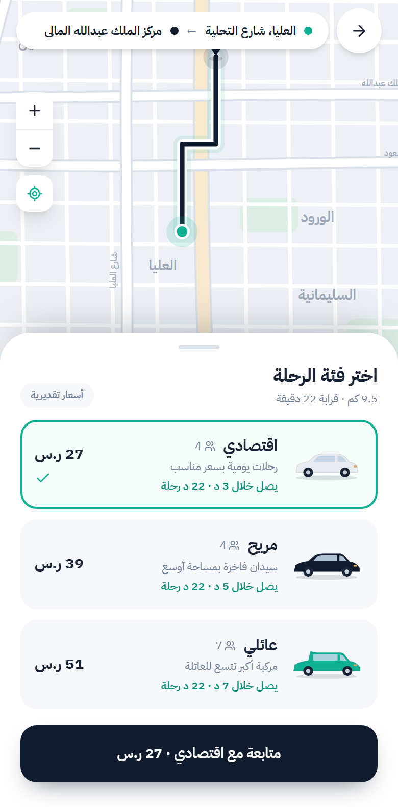
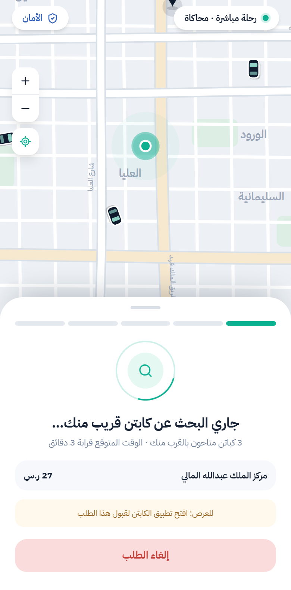
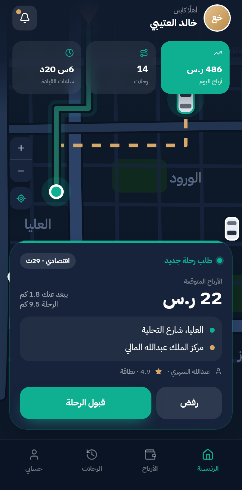
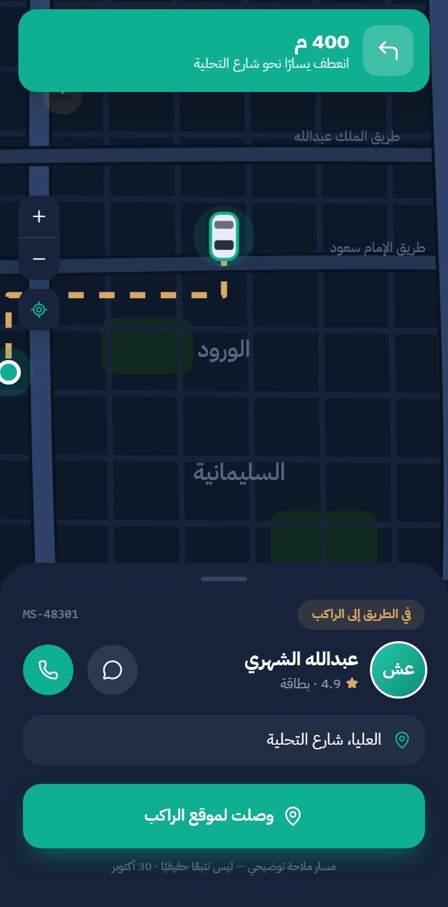
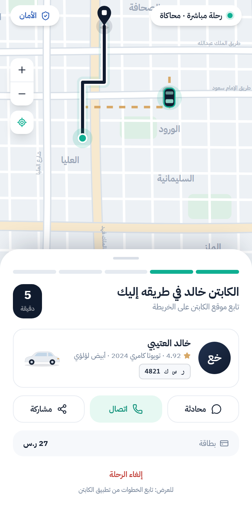
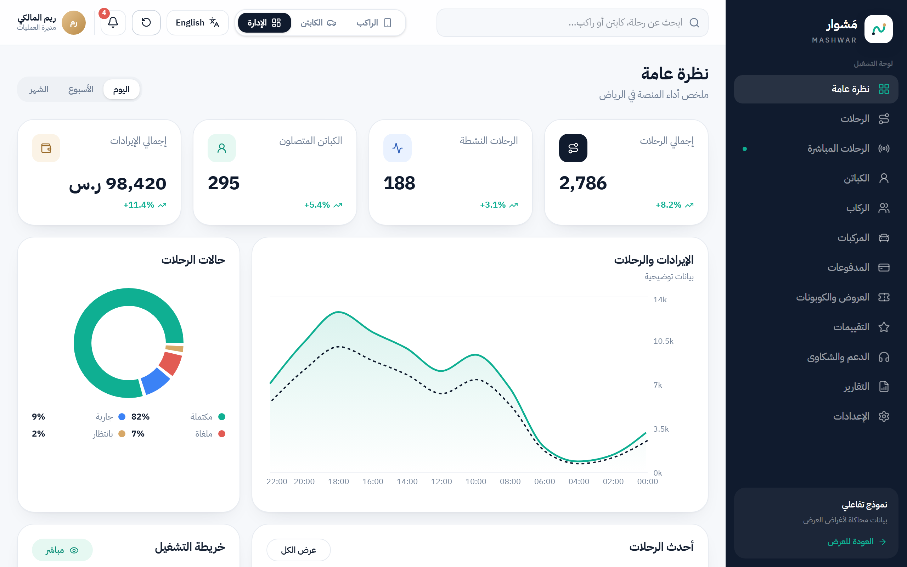

نموذج تفاعلي للتصميم
تطبيق الراكب وتطبيق الكابتن ولوحة الإدارة، بالعربية والإنجليزية. يمكنكم تجربة رحلة كاملة من الطلب حتى التقييم، وهي محاكاة للعرض فقط. وافقتم على الاتجاه العام للتصميم، ونحتاج الآن إقراركم للشاشات.

تجمع هذه الصفحة ما أنجزناه في المرحلة الأولى بلغة مبسطة، مع صور الشاشات ومخطط مبسّط لطريقة عمل النظام، وقائمة قصيرة بما نحتاجه منكم للانتقال إلى المرحلة الثانية.
الخلاصة
هدف هذه المرحلة أن نتفق على شكل التطبيق وقواعد عمله قبل البناء الفعلي، وأن نجهز الأساس التقني الذي ستُبنى عليه المراحل التالية. أنجزنا الأجزاء الأربعة التالية:
تطبيق الراكب وتطبيق الكابتن ولوحة الإدارة، بالعربية والإنجليزية. يمكنكم تجربة رحلة كاملة من الطلب حتى التقييم، وهي محاكاة للعرض فقط. وافقتم على الاتجاه العام للتصميم، ونحتاج الآن إقراركم للشاشات.
نطاق المشروع، ومراحل الرحلة من الطلب حتى الإلغاء، وقواعد الأسعار والانتظار والإلغاء والعمولة، وخطة الدفع عبر مدى وApple Pay والبطاقات والنقد.
أنشأنا مشروعَي التطبيقين للراكب والكابتن، والخادم، وقاعدة البيانات، وهيكل لوحة الإدارة، وهي تعمل ومختبرة. لا يشمل الأساس بعد تسجيل الدخول أو الخرائط أو الدفع، فهذه تُبنى في المرحلتين الثانية والثالثة.
عند كل تعديل يُعاد فحص النموذج والخادم وقاعدة البيانات والتطبيقين تلقائياً، وآخر فحص نجح بالكامل. كما نجح بناء نسخة Android من التطبيقين.
راجعنا 47 بنداً من بنود المرحلة الأولى واحداً واحداً:
البنود الأربعة الأخيرة هي أيقونات التطبيق (تنتظر الاسم والشعار النهائيين)، وتسجيل الدخول برمز الجوال (المرحلة الثانية)، وإعدادات بيئات التشغيل (تنتظر اختيار الاستضافة)، والتحقق من نسخة iPhone (تحتاج جهاز Mac، في المرحلة الثانية).
التصميم
صور من النموذج التفاعلي بالعربية وبحجم الجوال، تتبع رحلة واحدة كاملة. يمكنكم تجربتها بأنفسكم من رابط النموذج.
الراكب



الكابتن



لوحة الإدارة

الخريطة مرسومة للعرض، والدفع والرسائل محاكاة (رمز التحقق التجريبي 1234)، والأرقام والأسماء بيانات وهمية. الأسعار ونسبة العمولة (20%) ورسوم الانتظار والإلغاء قيم مبدئية لم تُعتمد. تُبنى الخرائط والرسائل الحقيقية في المرحلة الثانية، والدفع في المرحلة الثالثة.
الوضع الحالي
حتى لا يختلط النموذج التفاعلي بالتطبيق الفعلي، هذا تقسيم واضح لكل جزء:
التنقل بين كل الشاشات، ورحلة كاملة بين الراكب والكابتن، ولوحة الإدارة، والعربية والإنجليزية. كل ذلك محاكاة ببيانات وهمية داخل المتصفح.
مشروعا التطبيقين، وهيكل الخادم، وقاعدة البيانات بجداولها، وصلاحيات الموظفين، وقواعد الانتقال بين مراحل الرحلة.
تسجيل الدخول برمز الجوال، وتحديد الموقع والتتبع المباشر، والإشعارات، والدفع الإلكتروني، ولوحة الإدارة المتصلة بالبيانات الحقيقية.
المرحلة الثانية: التطبيقان والحجز والخرائط. المرحلة الثالثة: التتبع والإشعارات والإدارة والدفع التجريبي. المرحلة الرابعة: الاختبار والنشر في المتاجر.
لا يوجد حتى الآن في أي جزء من المشروع تحديد موقع حقيقي عبر GPS، ولا دفع إلكتروني، ولا رسائل رمز تحقق فعلية، ولا تتبع مباشر، ولا تسجيل دخول جاهز للتشغيل الفعلي.
طريقة العمل
يوضح المخطط التصميم المقترح للنظام الكامل: ثلاث واجهات يستخدمها الناس، وخادم واحد هو المرجع لكل القرارات، وقاعدة بيانات تحفظ كل شيء. المنفّذ منه الآن هو الأساس فقط، أما الخدمات الخارجية فتُربط في المراحل القادمة بحسابات باسم شركتكم.
في التصميم المقترح، يحسب الخادم السعر والعمولة وقبول الرحلة، لا الجوال. هذا يمنع التلاعب ويجعل كل رقم قابلاً للمراجعة.
إذا ضغط كابتنان «قبول» في اللحظة نفسها، تُسند الرحلة لواحد فقط. هذه القاعدة منفّذة في قاعدة البيانات واختبرناها.
صممنا قاعدة البيانات بحيث يُسجل كل مبلغ مرة واحدة ولا يُحذف، ولا تُقبل حركة غير متوازنة، واختبرنا ذلك. الدفع الفعلي يُربط في المرحلة الثالثة.
دورة الرحلة
نقترح هذه المراحل وما يحدث عند كل استثناء. هي موثقة ومبرمجة كقواعد في الأساس التقني، وتنتظر مراجعتكم. المدد والرسوم المذكورة لم تُحدد بعد.
الخطة
العقد أربع مراحل خلال 30 يوماً. هذه أهم مخرجات كل مرحلة:
التصميم والنموذج التفاعلي، وقواعد العمل، ومعمارية النظام، والأساس التقني للتطبيقين والخادم وقاعدة البيانات.
تطبيقا الراكب والكابتن فعلياً: التسجيل برمز الجوال، والخرائط، وطلب الرحلة وقبولها وإتمامها.
تتبع الكابتن مباشرة، والإشعارات، ولوحة الإدارة، والأسعار والكوبونات، وربط بوابة الدفع في وضع التجربة.
الاختبار على أجهزة حقيقية، والنشر في متجري Apple وGoogle، وتسليم الكود والحسابات والوثائق، ثم ضمان لعيوب التنفيذ مدته 45 يوماً يبدأ بعد نشر التطبيقين.
مطلوب منكم
لكل قرار اقتراح مبدئي، ولا يُعد أي اقتراح معتمداً حتى تؤكدوه. يكفي أن تردوا بـ«موافق» أو بما تفضلونه، وإن لم يكن القرار جاهزاً فيكفي موعد متوقع له.
مطلوبة قبل بدء المرحلة الثانية
اقتراح مبدئي — بانتظار اعتماد العميل تسجّل شركتكم حسابَي مطوّر في Apple وGoogle Play، ثم تضيفوننا بصلاحيات محدودة.
حساب Apple للشركات يحتاج رقم D-U-N-S وقد يستغرق أسابيع، ومن دونه لا يمكن التجربة على iPhone أو النشر في المتجر.
اقتراح مبدئي — بانتظار اعتماد العميل الرياض، وتزودوننا بقائمة الأحياء ونرسم حدودها لموافقتكم، والمطار منطقة مستقلة.
الطلبات خارج الحدود تُرفض، وإضافة مناطق لاحقاً تعديل بسيط في الإعدادات.
اقتراح مبدئي — بانتظار اعتماد العميل اقتصادي ومريح وعائلي كما في النموذج، مع حد أدنى لسنة الصنع لكل فئة.
فئات أقل عند الإطلاق تعني وصول الكابتن أسرع.
اقتراح مبدئي — بانتظار اعتماد العميل مزود رسائل سعودي مرخص باسم مرسل مسجّل، ورمز تحقق من 6 أرقام، والخرائط من Google Maps على حسابكم.
تسجيل الدخول برمز الجوال والخرائط من أعمال المرحلة الثانية. تسجيل اسم المرسل يحتاج وقتاً، وتكلفة الخرائط بحسب الاستخدام على حسابكم.
يمكن أن تنتظر حتى أثناء المرحلة الثانية
اقتراح مبدئي — بانتظار اعتماد العميل اعتماد «مَشوار» أو تزويدنا بالهوية النهائية، مع معرّف التطبيق في المتاجر باسم نطاق شركتكم.
نحتاجه قبل أول رفع للتطبيق إلى المتاجر، لأن الاسم والمعرّف يصعب تغييرهما بعده، وأيقونات التطبيق تنتظر هذا القرار.
اقتراح مبدئي — بانتظار اعتماد العميل مزود استضافة لديه مراكز بيانات داخل المملكة، بحساب باسم شركتكم، بعد مراجعة مستشاركم لنظام حماية البيانات الشخصية.
نحتاجه لبيئة التجربة خلال المرحلة الثانية، والانتقال لاحقاً مكلف.
اقتراح مبدئي — بانتظار اعتماد العميل تنشئون حساب منظمة على GitHub، فننقل إليه الكود كاملاً بتاريخه.
لا يعطّل العمل، لكن الكود مستضاف مؤقتاً على حسابنا إلى أن يتوفر حسابكم.
لم يُعتمد شيء من هذه القيم بعد، والأرقام الظاهرة في النموذج للعرض فقط. القائمة الكاملة، وفيها 36 قراراً مع توصياتها، متاحة لمن يرغب في التفاصيل، لكن القرارات أعلاه هي كل ما نحتاجه الآن.
الخطوات التالية
جرّبوا النموذج التفاعلي وأخبرونا بالموافقة أو بالتعديلات المطلوبة على كل قسم.
بالموافقة على اقتراحنا، أو برأيكم، أو بموعد متوقع للقرار.
بعد ملاحظاتكم نُجري التعديلات المطلوبة، ثم نرسل قائمة القبول لتراجعوها وتوقّعوها. لا ننتقل للمرحلة الثانية قبل اعتمادكم.